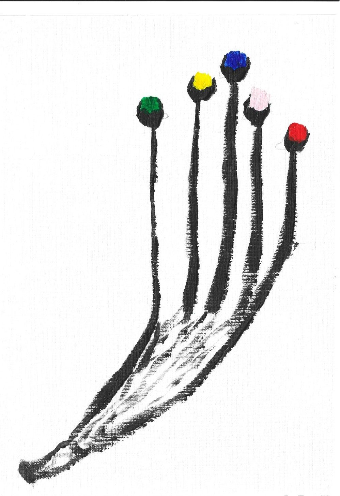
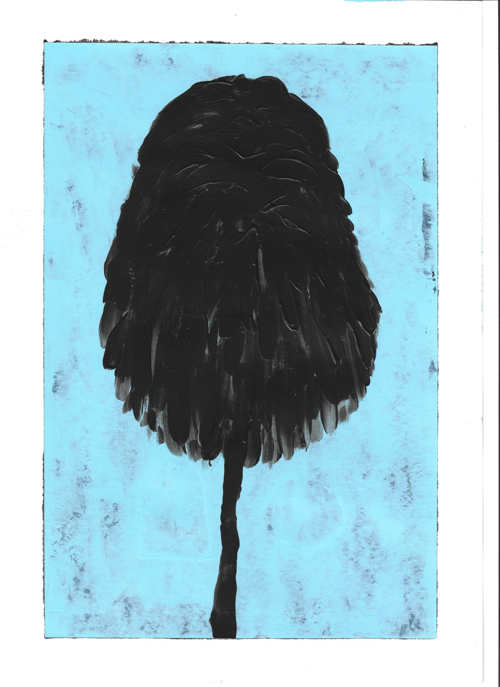
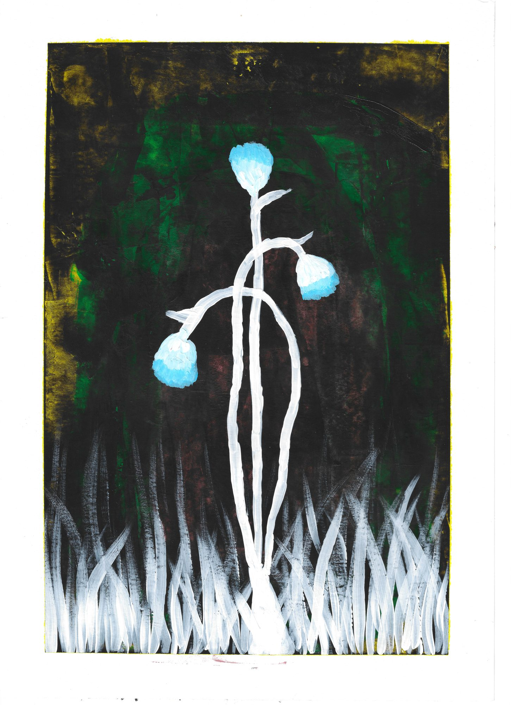

Interview · Paul Smith, 2023
On the occasion of the exhibition A Big Dream, Paul Smith, Rue de Grenelle & Boulevard Raspail, Paris. Read the original on paulsmith.com →
As an amateur, I discovered my love for drawing and creating in the most unlikely of circumstances. In 2017, as a homeless immigrant in Paris, I found solace and escape in public libraries where I started sketching and experimenting with colours. Sketching was a means to keep me busy and avoid the toxicity of my condition; soon it became a passion that brought meaning and an aim to my life.
Why do you work primarily in your medium?
I work primarily with markers and oil pastels because I enjoy the touch and the unique effects these materials create in my work. They allow me to work quickly and spontaneously without waiting for them to dry. I also enjoy creating simple geometric shapes and abstract drawings.

Where do you find inspiration?
My inspiration comes from different sources. Sometimes it's a feeling or emotion I want to express; sometimes it's a landscape or situation that catches my attention. Nature, music, and movies are great sources for me.
How would you describe your work?
Self-expression and therapy. I express myself through my drawings, showing emotions that are hard to express otherwise. Drawing is therapeutic; it gives me positive energy.

What do you hope people take away from your art?
I hope people feel a personal, emotional connection to the work. Art should evoke a response — joy, contemplation, even discomfort. If my work inspires someone to think more deeply about the world, then I've succeeded.
How does being an artist affect your outlook on life?
It heightens my awareness and appreciation for beauty and complexity. I've learned to embrace the unknown and approach challenges with curiosity.

How do you feel while you're working?
Creating art brings me joy and relief. I feel a flow that's hard to explain. I try to translate that energy into colours, lines, and space.
Do you have a routine when you're working?
I often listen to music, podcasts, or radio — sometimes I prefer silence. I don't have a studio; I work at the same table where I eat.
What does your typical working day look like?
Balancing a full-time job makes time tight, but I set aside two hours every evening to draw.
Entretien · Paul Smith, 2023
À l'occasion de l'exposition A Big Dream, Paul Smith, rue de Grenelle et boulevard Raspail, Paris. Lire l'article original sur paulsmith.com →
Autodidacte, j'ai découvert mon amour du dessin dans des circonstances inattendues. En 2017, j'étais immigré et sans logement à Paris. J'allais dans les bibliothèques, et c'est là que j'ai commencé à dessiner et à essayer les couleurs. Dessiner m'occupait et m'aidait à oublier ma situation difficile. Très vite, c'est devenu une passion qui a donné un sens et un but à ma vie. Je ne me vois pas encore comme un vrai artiste, mais je sais que l'art est ce qui fait avancer mes rêves.
Pourquoi utilisez-vous surtout ces matériaux ?
Je travaille surtout avec des feutres et des pastels à l'huile. J'aime les toucher, et j'aime les effets qu'ils donnent. Avec eux, je peux travailler vite, sans attendre qu'ils sèchent. J'aime aussi dessiner des formes géométriques simples et des dessins abstraits.
Où trouvez-vous l'inspiration ?
Un peu partout. Parfois, c'est un sentiment que je veux exprimer. Parfois, c'est un paysage ou un moment qui attire mon regard. La nature, la musique et les films m'inspirent beaucoup.
Comment décririez-vous votre travail ?
C'est une façon de m'exprimer, et une thérapie. Mes dessins montrent des émotions difficiles à dire avec des mots. Dessiner me fait du bien : ça me donne une énergie positive.
Qu'aimeriez-vous que les gens ressentent devant vos œuvres ?
J'aimerais qu'ils ressentent un lien personnel avec l'œuvre. L'art doit faire réagir : de la joie, de la réflexion, ou même un peu de gêne. Si mon travail aide quelqu'un à réfléchir plus profondément au monde, alors j'ai réussi.
Être artiste, qu'est-ce que ça change dans votre vie ?
Je remarque davantage la beauté et la complexité des choses. J'ai appris à accepter l'inconnu et à affronter les difficultés avec curiosité.
Que ressentez-vous quand vous dessinez ?
De la joie et du soulagement. Je ressens un élan difficile à expliquer, et j'essaie de traduire cette énergie en couleurs, en lignes et en espaces.
Avez-vous des habitudes quand vous travaillez ?
J'écoute souvent de la musique, des podcasts ou la radio. Parfois, je préfère le silence. Je n'ai pas d'atelier : je dessine sur la table où je mange.
À quoi ressemble une journée de travail pour vous ?
J'ai un travail à plein temps, donc j'ai peu de temps. Mais chaque soir, je garde deux heures pour dessiner.
مقابلة · Paul Smith، 2023
بمناسبة معرض A Big Dream، Paul Smith، شارع غرونيل وجادة راسباي، باريس. اقرأ المقال الأصلي على paulsmith.com ←
اكتشفتُ حُبي للرسم والإبداع بوصفي هاويًا وفي ظروف غير متوقعة. في عام 2017، عندما كنتُ مهاجرًا بلا مأوى في باريس، وجدتُ ملاذًا في المكتبات العامة، حيث بدأتُ أرسم وأجرّب الألوان. كان الرسم وسيلةً لأُشغل نفسي وأبتعد عن قسوة وضعي، ثم صار شغفًا منح حياتي معنى وهدفًا. لا أرى نفسي بعدُ فنانًا مكتملًا، لكنني أعلم أن الفن هو القوة الدافعة وراء أحلامي.
لماذا تعمل بهذا الوسيط؟
أعمل غالبًا بالأقلام الملوّنة والباستيل الزيتي لأنني أحبّ الملمس والآثار الفريدة التي تخلقها هذه المواد. فهي تتيح لي العمل بسرعة وعفوية دون انتظار أن تجفّ. كما أحبّ رسم أشكال هندسية بسيطة ورسومات تجريدية.
من أين تستمدّ الإلهام؟
تأتي الإلهامات من مصادر عديدة؛ أحيانًا من شعور أو عاطفة أريد التعبير عنها، وأحيانًا من مشهد أو موقف يلفت انتباهي. الطبيعة والموسيقى والأفلام مصادر أساسية لي.
كيف تصف أعمالك؟
تعبيرٌ عن الذات وعلاج. أعبّر عن نفسي من خلال رسوماتي، وأُظهر مشاعر يصعب التعبير عنها بطريقة أخرى. الرسم علاج يمنحني طاقة إيجابية ويساعدني على فهم نفسي.
ماذا تأمل أن يأخذ الناس من أعمالك؟
آمل أن يشعر المتلقي برابطة شخصية وعاطفية مع العمل. على الفن أن يثير استجابةً: فرحًا أو تأملًا أو حتى انزعاجًا. إذا ألهم عملي أحدًا ليتأمل العالم بعمقٍ أكبر، فأعتبر أنني نجحت.
كيف يؤثّر كونك فنانًا في نظرتك إلى الحياة؟
يزيد وعيي بالجمال والتعقيد وتقديري لهما. تعلّمتُ أن أتقبّل المجهول وأن أواجه الصعوبات بفضول.
بماذا تشعر وأنت تعمل؟
يمنحني الإبداع فرحًا وارتياحًا. أشعر بتدفّقٍ يصعب شرحه، وأحاول أن أترجم تلك الطاقة إلى ألوان وخطوط ومساحات.
هل لديك روتين أثناء العمل؟
غالبًا أستمع إلى الموسيقى أو البودكاست أو الراديو، وأحيانًا أفضّل الصمت. ليس لديّ مرسم؛ أعمل على الطاولة نفسها التي آكل عليها.
كيف يبدو يومك الاعتيادي؟
مع وظيفةٍ بدوام كامل، يكون الوقت ضيقًا؛ لكنني أخصّص ساعتين كلّ مساء للرسم.